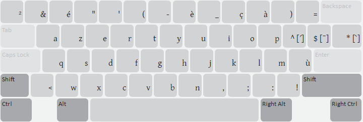
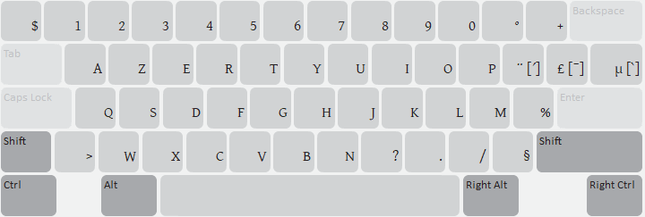
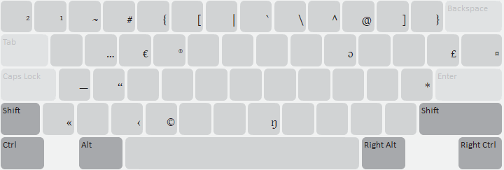
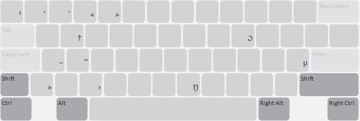
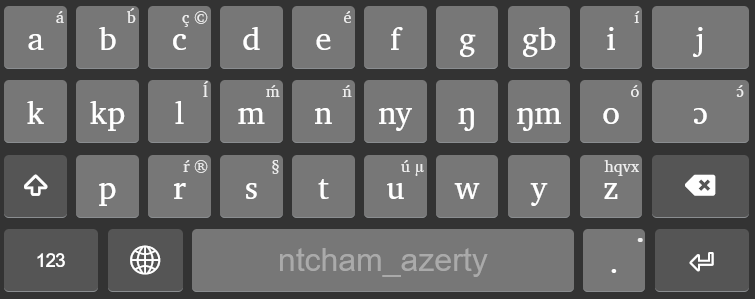
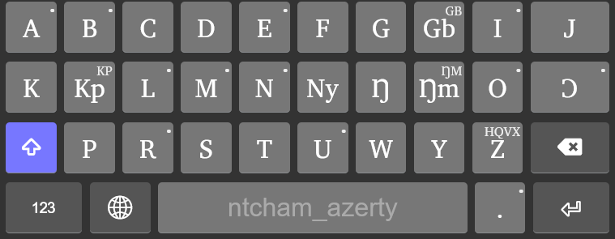
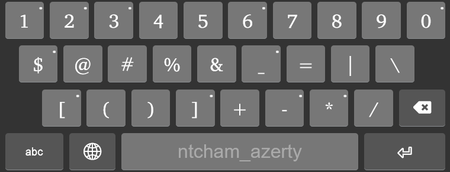
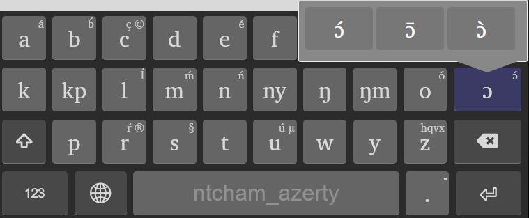

Commencez à utiliser Ntcham (AZERTY) / Start Using Ntcham (AZERTY)
Ce clavier prend en charge la langue ntcham du Togo sur un clavier AZERTY (français).
This keyboard supports the Ntcham language of Togo for an AZERTY (French) Keyboard.
Disposition du clavier pour ordinateur / Desktop Keyboard layout
Ce clavier utilise des touches mortes (combinaisons de touches) pour produire les caractères accentués et les lettres spécifiques à la langue ntcham. Par exemple :
- a^ produit á (également disponible pour les lettres b, e, i, l, m, n, o, r, u et ɔ, ainsi que leurs majuscules).
- a$ produit ā (également disponible pour les lettres b, e, i, l, m, n, o, r, u et ɔ, ainsi que leurs majuscules).
- a* produit à (également disponible pour les lettres b, e, i, l, m, n, o, r, u et ɔ, ainsi que leurs majuscules).
- ;n produit ŋ et ;N produit Ŋ.
- ;o produit ɔ et ;O produit Ɔ.
This keyboard makes use of multi-key input. For example:
- a^ produces á (also available for the letters b, e, i, l, m, n, o, r, u and ɔ, as well as their capital letters).
- a$ produces ā (also available for the letters b, e, i, l, m, n, o, r, u and ɔ, as well as their capital letters).
- a* produces à (also available for the letters b, e, i, l, m, n, o, r, u and ɔ, as well as their capital letters).
- ;n produces ŋ and ;N produces Ŋ.
- ;o produces ɔ and ;O produit Ɔ.
Les différentes dispositions disponibles sont les suivantes :
Par défaut (sans la touche Maj) / Default (unshifted)

Maj (Shift) / Shift

Alt droite (AltGr) / Right ALT (unshifted)

Maj + Alt droite (Shift + AltGr) / Shift Right ALT

Disposition du clavier pour téléphone mobile / Mobile/Phone Keyboard layout
Par défaut (sans Maj) / Default (unshifted)

Maj (Shift) / Shift

Clavier numérique / Numeric

Appui long (pour accéder aux caractères supplémentaires) / Longpress
On mobile phone, keys with a little dot on the top right can be pressed and held for more keys.

{kind=link}
{kind=link}
{kind=link}
{kind=link}
{kind=link}
{kind=link}
{kind=link}
{kind=link}